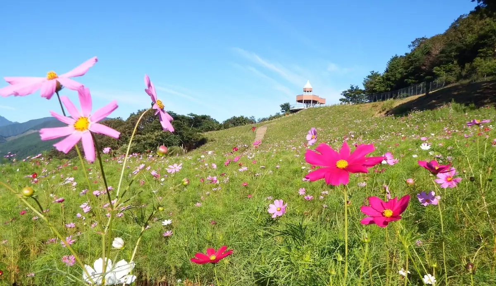
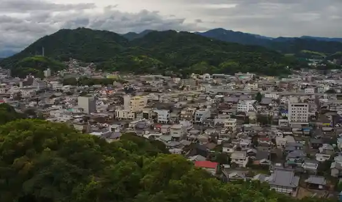
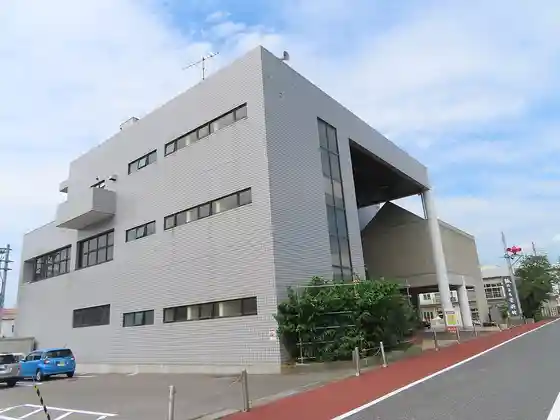
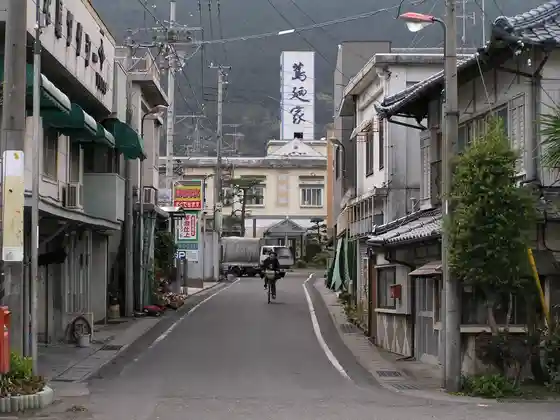

Shikokuchuo
Shikokuchuo · Ehime
Shikokuchuo
Highlighted on the Ehime map.

Stay
Kawanoe Bijinesu Hotel
Purinsu Hotel Sugi Gen
Bijinesu Hotel Mairudo
Hotel Guranfore
Kiri no Mori Koteji
Tennen Onsen (Toyo Baths) Supa Hotel Shikokuchuo
Hotel Ribumakkusu BUDGET Iyo Mishima
Hotel Serekutoin Shikokuchuo
Shikoku Sentoraru Hotel
Tennen Onsen (Tabibito Baths) Hotel Rutoin Shikokuchuo ‐ Mishima Kawanoe Inta ‐
HOTEL R9 The Yard Shikokuchuo
HOTEL AZ Ehime Tsuchii Inta Mise
Shikochubesu ^
Dining
Kama Yakitori Honpo Kawanoe Mise
Restaurant&Cafe Riina
Pittsueria Eigoro Iyo Mishima
Sushi to Izakaya Uotami Iyo Mishima Mise
Niwatori Yakiniku Sanroku Kyu
Mishima Baru evoevo
Riisa cafe
Tamachanchi
Chainiizuresutoran Panda
Bijinesu Hotel Mairudo
GREEN TAIL CAFE
cafe cherry blossom
Tori Sakae
Yoro no Taki Kawanoe Mise
Hotel Serekutoin Shikokuchuo
Yaki Tori Ichiban Tori
Onsen
Kiri no Mori Koteji Kiri no Mori Ko Yu
Tennen Onsen (Toyo Baths) Supa Hotel Shikokuchuo Tennen Onsen
Tennen Onsen (Tabibito Baths) Hotel Rutoin Shikokuchuo ‐ Mishima Kawanoe Inta ‐ Tennen Onsen
Sights
Sui Nami Highlands
Kawanoe Shiro

Kami no Machi Museum

Iyo Tsuchii Eki
